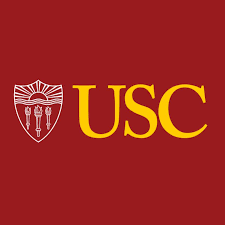

Education
St. Margaret's Episcopal School
San Juan Capistrano, CA
2018 - Present

Academic Weighted GPA (9th-11th):
4.34/5.0
Unweighted GPA (9th-11th):
3.82/4.0
SAT Score (2024):
1540/1600 (Math: 790, Reading & Writing: 750)
PSAT Score (2024):
1460/1520 (Math: 760, Reading & Writing: 700)
Advanced Placement Courses (10 total):
- AP Physics C Mechanics
- AP Latin
- AP Macroeconomics
- AP US History
- AP Computer Science Principles
- AP Computer Science A
- AP Calculus AB
- AP Calculus BC
- AP Literature
- AP Biology
Summer Programs
Johns Hopkins - Explore Engineering Innovation
June 2023 - July 2023 (4 weeks)
Learned the basics and intricacies of engineering. Lived on campus and connected with future aspiring engineers. This experience inspired continued pursuit of an engineering career.
UPenn ESAP - Robotics Specialization
July 2025 (3 weeks)
Learned about electronics, circuitry, Arduinos, and design processes. Created a robotic recorder as part of a robotic orchestra, capable of playing any song transmitted through WiFi.
Research Projects
AI Pup Trainer
2023 - 2024
- Built a device that trains dogs using image detection and machine learning
- Integrated camera, inference, and actuator control systems
- Published research paper at the SIPM conference (2024) documenting approach and results
Robotic Recorder (UPenn ESAP — Robotics)
July 2025
- Designed and built a Wi-Fi-controlled recorder as part of a robotic orchestra
- Implemented electronics, firmware, and mechanical actuation to play MIDI-driven songs
Nanotechnology Research (ACS Nano Publication)
2024
- Co-authored a research paper published on ACS Nano
- Focused on application of nanotech for spatial optics
- Contributed to cutting-edge research in nanotechnology applications
Research Institutions & Organizations


Research & Work Experience
Research Intern — University of Southern California (Biomedical Engineering)
July 2024
- Studied environmental impact of MRI and CT contrast agents
- Surveyed mitigation approaches (removal and degradation pathways)
- Summarized findings for internal notes and discussions
Technical Assistant — Hura Imaging (USC-affiliated medical imaging startup)
July 2024 – December 2024
- Supported server maintenance and home-based data streaming for imaging workflows
Research Intern — Tulane University
July 2024 – August 2024
- Explored applications of machine learning for TB drug-resistance identification
- Conducted literature review and assisted with data preparation and analysis
Business/Conference Intern — Intelligenome (ADLM, 2024)
July 2024
- Supported outreach for CRISPR-based TB detection kits
- Engaged prospective partners and collected product-feedback notes
Honors and Awards
National Recognition
- 1st place winner GameGala (2024)
- Performed in Carnegie Hall (2022)
School Honors
- Head of School Honors (5 times) (2022-Present)
- President of Esports Club (2023-Present)
- Stage Crew Tech for Upper School Plays (2022-Present)
Extracurricular Activities
- Volunteer at OC Discovery Cube (2023-Present)
- Esports Club Leadership - hosted Upper School events and competed against other schools (2023-Present)